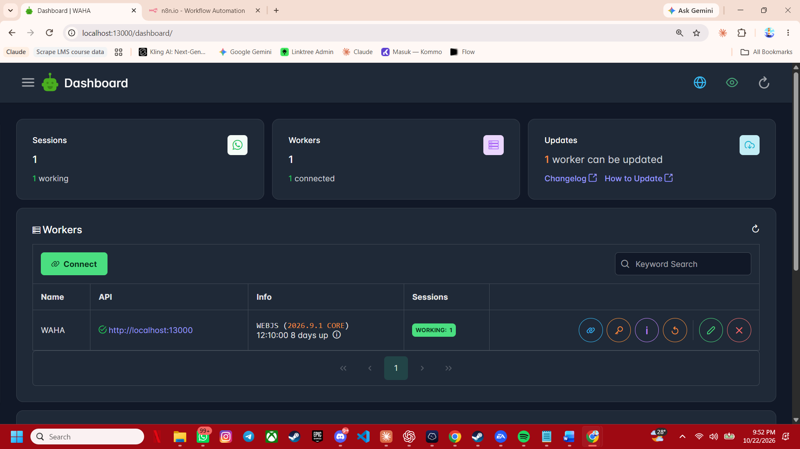

Wella — Agent AI WhatsApp 24 Jam
Otomasi layanan pelanggan WhatsApp, termasuk pesan media dan pembaruan pengetahuan oleh admin melalui chat.
Detail proyek
- Masalah
- Admin tidak bisa membalas chat pelanggan di luar jam kerja.
- Solusi
- Agent AI yang membalas dengan gaya admin manusia, membaca pesan media, dan dapat dilatih nomor admin terdaftar lewat chat.
- Teknologi
- WAHADockerGemini APILinuxTailscale
- Peran saya
- Merancang, membangun, dan memelihara seluruh sistem.
- Hasil
- Layanan pelanggan dirancang untuk berjalan 24 jam.
- Tautan
- Lihat alur otomasi